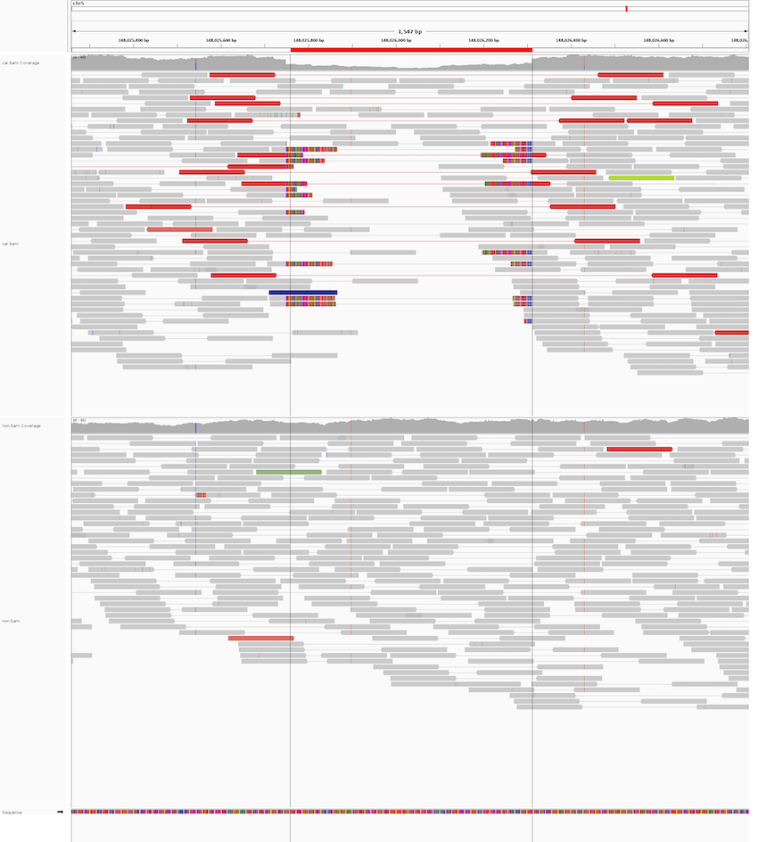

Analytical Methods in Cancer Genomics
Course Content
This course will focus on the analysis of data from cancer genomics studies. Bioinformatic concepts, tools and methods required to analyse tumor sequencing data will be introduced. Learning outcomes include an overview of the challenges in the study of cancer genomics, discovery and visualisation of copy-number and structural variants, understanding the principles of tumor purity, heterogeneity and ploidy and an overview of cancer epigenetics. Practical data analysis sessions in R or python and using shell scripts will complement the course, including an overview of machine learning techniques.
Schedule
- Tuesday 6th Apr, 2pm-3pm: Introduction to Cancer Genomics, Slides
- Tuesday 13th Apr, 2pm-3pm: Genomic Rearrangements, Slides
- Tuesday 20th Apr, 2pm-3pm: Version control, electronic notebooks, markdown and package managers (Exercise discussion), Slides
- Tuesday 27th Apr, 2pm-3pm: Cancer Epigenetics, Slides
- Tuesday 4th May, 2pm-3pm: Data Exploration, Supervised Learning, Regression using R Statistics (Slides)
- Tuesday 11th May, 2pm-3pm: Presentations by students
- Tuesday 18th May, 2pm-3pm: Presentations by students
- Tuesday 25th May, 2pm-3pm: Presentations by students
Cancer Genomics Data Analysis Exercise (due date 4th May 2021, 2pm CET)
In this exercise we want to analyze a cancer genomics sample (a paired tumor-control sample set).
This is a simulated Medulloblastoma sample with a matched control.
You can download the data set here.
The main objective of this exercise is to align the data to the reference genome, to sort and index the alignments and to generate a read-depth plot, as discussed in the lectures.
Please note that I downsampled the dataset and I also just kept the data for chromosome X from 20Mbp to 40Mbp (GRCh37/hg19 coordinates) because otherwise all analysis take a lot of time.
Once you have generated the alignment in BAM format you can subset the BAM to the region of interest using `samtools view -b input.bam chrX:20000000-40000000 > output.bam`.
In order to learn and get to know version control softwares (git) please create yourself a Github account, create a new repository and write-up your analysis pipeline using Markdown.
You can, of course, in additon use the Github repository to store your analysis scripts in your favorite language, i.e., this could be bash scripts, Snakemake or Nextflow pipelines, R or python scripts.
Likewise feel free to check-in a Makefile or a requirements file for Bioconda if you use these to install tools.
At the very minimum the repository should contain the produced read-depth plot and a README.md file that explains the steps you have executed to generate the read-depth plot.
Once you are done please email me the repository link using the email address which you used to register for the course.
**Optional**: Once you have successfully computed a read-depth plot you may also want to call structural variants and overlay these with the read-depth plot or call germline variants and annotate these with functional consequences (Slides).
Machine Learning Programming Exercise (due date 8th June 2021)
In 2015, the 1000 Genomes Project published a map of genomic structural variants for 2504 individuals sampled from different parts of the world (Paper). The simplest structural variant is a deletion, where a long stretch of DNA is missing in one sample with respect to the human reference genome. For the 1000 Genomes Project we were specifically interested in cataloging these deletions, basically finding out where they are in the genome and how many people among the 2504 individuals share the same deletion. As an example, you can see below a deletion visualized in IGV where one individual (shown in the upper panel) is a heterozygous carrier of the deletion (marked as a red bar at the top) and the lower panel shows an individual that is not a carrier of this deletion.

The alignment signals that structural variant prediction algorithms evaluate are a change in read-depth because one haplotype is lost (see coverage drop in IGV), read-pairs that span the deletion and have an insert size larger than expected (read pairs colored in red in IGV) and reads that have a prefix alignment before the start of the deletion or a suffix alignment after the deletion (the colorful bases in IGV are the trimmed portions of reads not mapped because of the deletion).
The different research groups in the 1000 Genomes project predicted genomic deletions in these 2504 samples. As usual, some predictions (hopefully the majority) will be true and other predicted deletions will be false for various reasons (mis-mappings, bugs in the algorithms, incomplete reference sequence, etc.). I have annotated a subset of the deletion predictions where we have prior validation information on as likely true (status = 1) and as likely false (status = 0). I then computed a list of features for these deletions that you can later use in your machine learning models to predict for the unlabeled deletions whether these are likely true or likely false. Below is a brief explanation for each feature.
Features
- size: Size of the deletion
- vac: How many alleles have the deletion (2504 diploid samples -> 5008 alleles in total)
- vaf: Allele frequency (simply vac/5008)
- pass: 1 - Deletion prediction passed all algorithm filters, 0 – deletion did not pass all filters
- missingrate: Fraction of samples not genotyped for this deletion
- precise: 1 - The deletion has single-nucleotide resolution, 0 - only approximate breakpoints are known
- ci: Confidence interval size around the deletion breakpoints (how sure is the algorithm about the breakpoint)
- ce: DNA sequence entropy of the deletion
- refgq: Average genotype quality of homozygous reference samples
- altgq: Average genotype quality of deletion carrier samples
- rdratio: Read-depth ratio of deletion carriers compared to deletion non-carriers
- altratio: Average fraction of reads supporting the deletion in a carrier sample
- refratio: Average fraction of reads supporting the deletion in a non-carrier sample
- maxaltratio: Maximum fraction of reads supporting the deletion in a carrier sample
- status: 1 – likely true deletion, 0 – likely false deletion, NA – unlabeled (deletion could be true or false)
My very simple example approach to predict the status of unlabeled deletions (true/false) is based on the genotyping quality of deletion carriers (altgq). An Rscript for this approach is available here. Please change this Rscript with your favorite machine learning technique and ideally improve my very simplistic decision tree approach. Once you are done please commit your Rscript to your GitHub repository from the Cancer Genomics exercise in a new subfolder. Please also include some comments either as a separate Markdown file or within the code. If you prefer to use a different programming language to run your machine learning models you are welcome to do so. The deadline for this exercise is 8th June 2021, please email me again your GitHub repository URL once you are done. Thanks.
Useful links
Below are a couple of links to commonly used Bioinformatics tools in Cancer Genomics (certainly not comprehensive).
Next-generation sequencing analysis tutorials
Commonly used alignment tools
Tools for working with alignment files (BAM files)
Tools to compute read counts in windows
Tools for short variant calling (point mutations and short insertions and deletions)
Tools for structural variant calling
Tools for working with variant call files (VCF/BCF)